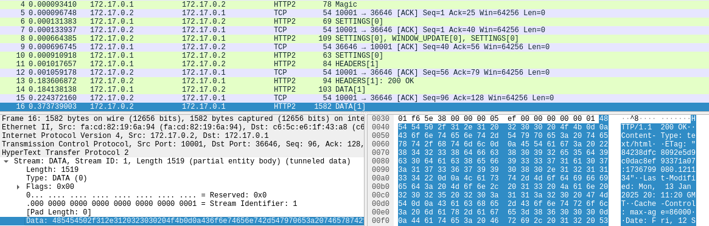
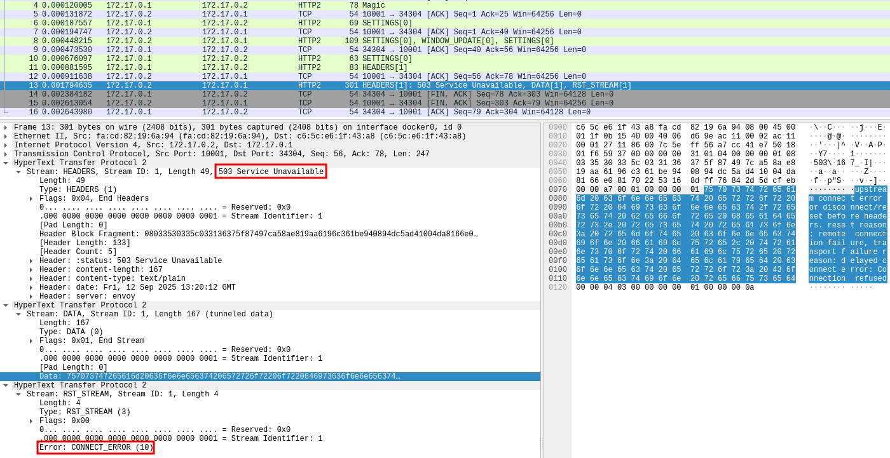

In HTTP/1, the CONNECT method instructs a proxy to establish a TCP tunnel to a requested target. Once the tunnel is up, the proxy blindly forwards raw traffic in both directions. This mechanism is most commonly used to tunnel TLS traffic through forwarding proxies.
While digging through the HTTP/2 specification (RFC 9113), I noticed it also features the CONNECT method but with a slight twist. Unlike its predecessor, HTTP/2 CONNECT doesn’t hijack the entire TCP connection, it operates on a single stream. This subtle difference piqued my curiosity.
A typical HTTP/1 CONNECT request is straightforward:
CONNECT google.de:443 HTTP/1.1
Host: google.de:443
User-Agent: curl/8.5.0
Once the server responds with HTTP/1.1 200 OK, the tunnel is ready. In essence, HTTP/1 CONNECT upgrades the entire TCP connection. Raw data is forwarded from that point on, making it seem as if the client is connected directly to the target.
HTTP/2, by contrast, is a binary protocol where the fundamental protocol unit is the frame. As shown below, every frame carries a stream identifier:
---
title: "HTTP/2 Frame"
---
packet
0-23: "Length (24)"
24-31: "Type (8)"
32-39: "Flags (8)"
40-40: "rsvd"
41-71: "Stream Identifier (31)"
This stream identifier is used to simulate the HTTP/1 request and response pattern by associating each interaction with a unique stream. Streams allow multiplexing which means a single HTTP/2 connection can host multiple, simultaneous CONNECT tunnels. The raw data for each tunnel is then encapsulated within DATA frames on its respective stream.
To experiment with this, I decided to build a scanner for misconfigured proxies that allow connections to internal targets, leveraging multiplexing to efficiently scan a range of internal ports over a single TCP connection.
Building a Scanner in Go
Go is currently my language of choice, and its standard library includes HTTP/2 support. While the high-level net/http client doesn’t directly expose the CONNECT method for HTTP/2, the necessary building blocks are available in the golang.org/x/net/http2 package.
First, we establish a raw TCP or TLS connection to the proxy. For TLS, we must negotiate HTTP/2 using ALPN by setting NextProtos to h2.
// Note: All code snippets omit error handling for brevity.
conn, _ := tls.Dial("tcp", url.Host, &tls.Config{
InsecureSkipVerify: true,
NextProtos: []string{"h2"},
})
To initiate the HTTP/2 connection, the client must send the connection preface (PRI * HTTP/2.0\r\n\r\nSM\r\n\r\n) followed by a, potentially empty, SETTINGS frame. The server replies with its own SETTINGS frame. Once both sides have acknowledged each other’s settings, the connection is ready.
conn.Write([]byte(http2.ClientPreface))
framer := http2.NewFramer(conn, conn)
framer.WriteSettings(http2.Setting{})
The http2.Framer handles the low-level work of parsing and serializing frames. Our main logic can be built around a loop that reads and processes incoming frames:
for {
f,_ := framer.ReadFrame()
switch f := f.(type) {
case *http2.DataFrame:
// Handle incoming data for a tunnel
case *http2.MetaHeadersFrame:
// Handle response headers for a CONNECT request
case *http2.GoAwayFrame:
log.Println("Received GoAway frame")
return // Connection is closing
case *http2.SettingsFrame:
log.Printf("Received SETTINGS frame, ACK: %t\n", f.IsAck())
case *http2.RSTStreamFrame:
log.Printf("Received RST_STREAM frame for stream %d. Error: %s", f.StreamID, f.ErrCode)
case *http2.PingFrame:
log.Printf("Received frame: %v\n", f.FrameHeader.Type)
case *http2.WindowUpdateFrame:
log.Printf("Received frame: %v\n", f.FrameHeader.Type)
default:
log.Printf("Transport: unhandled response frame type %T", f)
}
To create a tunnel, we send a HEADERS frame with the CONNECT method and set the :authority pseudo-header to our desired destination. Unlike HTTP/1’s plaintext headers, HTTP/2 headers must be HPACK-encoded. This compression scheme saves bandwidth while also resisting compression oracle attacks like CRIME. HPACK uses a combination of a static table for common headers, a dynamic table that indexes repeated headers within the connection, and a static Huffman code for any remaining string literals. The initial static table and Huffman code are defined in the specification.
var hpackBuf bytes.Buffer
hpackEncoder := hpack.NewEncoder(&hpackBuf)
// Client-initiated streams MUST use odd-numbered stream identifiers.
streamID := uint32(1)
targetAddress := "192.168.1.1:8080"
connectHeaders := []hpack.HeaderField{
{Name: ":method", Value: "CONNECT"},
{Name: ":authority", Value: targetAddress},
}
for _, hf := range connectHeaders {
_ = hpackEncoder.WriteField(hf)
}
err := framer.WriteHeaders(http2.HeadersFrameParam{
StreamID: streamID,
EndHeaders: true,
EndStream: false, // Keep the stream open for data
BlockFragment: hpackBuf.Bytes(),
})
If the proxy successfully establishes the tunnel, it will respond with a HEADERS frame containing a :status 200. From that point on, any DATA frames we send on that stream ID will be forwarded to the target, and any data from the target will be sent back to us in DATA frames on the same stream.
To make this stream usable in Go, we can wrap it in an object that satisfies the standard net.Conn interface. This allows us to treat our proxied tunnel just like any other network connection, such as one created with net.Dial(). The interface is defined as follows:
type Conn interface {
Read(b []byte) (n int, err error)
Write(b []byte) (n int, err error)
Close() error
LocalAddr() Addr
RemoteAddr() Addr
SetDeadline(t time.Time) error
SetReadDeadline(t time.Time) error
SetWriteDeadline(t time.Time) error
}
An example implementation for the Read and Write methods might look like this:
type tunnelConn struct {
proxyConn *proxyConn
streamID uint32
rxChan chan []byte
rxBuff bytes.Buffer
}
func (t *tunnelConn) Write(b []byte) (n int, err error) {
err = t.proxyConn.framer.WriteData(t.streamID, false, b)
return len(b), err
}
func (t *tunnelConn) Read(b []byte) (n int, err error) {
if t.rxBuff.Len() == 0 {
data, ok := <-t.rxChan
if !ok {
return 0, io.EOF
}
t.rxBuff.Write(data)
}
return t.rxBuff.Read(b)
}
With this net.Conn implementation, we can easily layer other protocols on top. For instance, we could perform a TLS handshake and send an HTTP/1 request through the tunnel:
tunnel, _ := proxyConn.getTunnelConn(ports, resultChan, "example.com", rxChan)
tlsClient := tls.Client(tunnel, &tls.Config{
ServerName: "example.com",
InsecureSkipVerify: true,
})
fmt.Fprintf(tlsClient, "GET / HTTP/1.1\r\nHost: %s\r\n\r\n", "example.com")
Here is an example of the tool connecting to example.com through an HTTP/2 proxy:
└─$ ./http2ConnTun -u example.com -p 443 -c -k
2025/09/10 07:02:20 INFO Connected to proxy
HTTP/1.1 200 OK
Content-Type: text/html
ETag: "84238dfc8092e5d9c0dac8ef93371a07:1736799080.121134"
Last-Modified: Mon, 13 Jan 2025 20:11:20 GMT
Cache-Control: max-age=86000
Date: Wed, 10 Sep 2025 05:02:21 GMT
Content-Length: 1256
Connection: keep-alive
Alt-Svc: h3=":443"; ma=93600
<!doctype html>
<html>
<head>
<title>Example Domain</title>
<meta charset="utf-8" />
<meta http-equiv="Content-type" content="text/html; charset=utf-8" />
<meta name="viewport" content="width=device-width, initial-scale=1" />
<style type="text/css">
body {
...
The following Wireshark screenshot illustrates the full process, using a plaintext HTTP/1 request inside the tunnel for clarity:

- The flow begins with the client preface, which Wireshark labels
Magic. - We see the initial
SETTINGSframes from the client and server, followed bySETTINGSframes with theACKflag set, confirming receipt. - The client sends a
HEADERSframe with theCONNECTmethod, and the server replies with aHEADERSframe indicating the result. - Finally, two
DATAframes contain the plaintext HTTP/1 request and response sent through the established tunnel.
The full source code is available at https://github.com/fl0mb/HTTP2-CONNECT-Tunnel.
Application: Efficient Port Scanning
With the underlying mechanics in place, building a port scanner is straightforward. Send out CONNECT requests for various ip:port combinations, each on a new stream ID. We don’t even need to send DATA frames; we only need to monitor the response headers to determine if a port is open.
-
A successful connection yields a
HEADERSframe with a:status 200. -
As observed with Envoy and Apache httpd, a failed connection will typically result in:
- A
HEADERSframe with a:status 503. - A
DATAframe from the proxy itself containing an error message. - A
RST_STREAMframe with an error likeCONNECT_ERROR(Envoy) orNO_ERROR(Apache). This is the most reliable indicator of failure.
- A

By tracking the responses for each stream ID, we can map out open ports on an internal network, all multiplexed over a single HTTP/2 connection. This technique may also bypass network security monitoring that isn’t equipped to inspect multiplexed HTTP/2 traffic.
Setting Up a Test Environment
Support for HTTP/2 CONNECT tunneling is not yet widespread. I found reliable implementations in Envoy and Apache httpd.
To run a test instance of Envoy, use the following Docker command:
docker run --rm -v ./envoy.yaml:/envoy.yaml:ro envoyproxy/envoy:distroless-v1.35-latest -c /envoy.yaml
envoy.yaml:
static_resources:
listeners:
- name: listener_0
address:
socket_address:
protocol: TCP
address: 0.0.0.0
port_value: 10001
filter_chains:
- filters:
- name: envoy.filters.network.http_connection_manager
typed_config:
"@type": type.googleapis.com/envoy.extensions.filters.network.http_connection_manager.v3.HttpConnectionManager
stat_prefix: ingress_http
codec_type: HTTP2
route_config:
name: local_route
virtual_hosts:
- name: local_service
domains:
- "*"
routes:
- match:
connect_matcher:
{}
route:
cluster: dynamic_forward_proxy_cluster
upgrade_configs:
- upgrade_type: CONNECT
connect_config:
{}
http_filters:
- name: envoy.filters.http.dynamic_forward_proxy
typed_config:
'@type': type.googleapis.com/envoy.extensions.filters.http.dynamic_forward_proxy.v3.FilterConfig
dns_cache_config:
name: dynamic_forward_proxy_cache_config
dns_lookup_family: V4_ONLY
http_filters:
- name: envoy.filters.http.router
typed_config:
"@type": type.googleapis.com/envoy.extensions.filters.http.router.v3.Router
http2_protocol_options:
allow_connect: true
clusters:
- name: dynamic_forward_proxy_cluster
lb_policy: CLUSTER_PROVIDED
cluster_type:
name: envoy.clusters.dynamic_forward_proxy
typed_config:
'@type': type.googleapis.com/envoy.extensions.clusters.dynamic_forward_proxy.v3.ClusterConfig
dns_cache_config:
name: dynamic_forward_proxy_cache_config
dns_lookup_family: V4_ONLY
To run a test instance of Apache httpd:
docker run --rm -p 8080:8080 -v ./httpd.conf:/usr/local/apache2/conf/httpd.conf httpd:2.4.65
httpd.conf:
ServerRoot "/usr/local/apache2"
Listen 8080
LoadModule mpm_event_module modules/mod_mpm_event.so
LoadModule http2_module modules/mod_http2.so
LoadModule proxy_module modules/mod_proxy.so
LoadModule proxy_connect_module modules/mod_proxy_connect.so
LoadModule proxy_http_module modules/mod_proxy_http.so
LoadModule authz_core_module modules/mod_authz_core.so
LoadModule log_config_module modules/mod_log_config.so
LoadModule unixd_module modules/mod_unixd.so
<IfModule unixd_module>
User daemon
Group daemon
</IfModule>
ErrorLog /dev/stderr
TransferLog /dev/stdout
ServerName localhost
<VirtualHost *:8080>
ProxyRequests on
Protocols h2c
AllowCONNECT 443 80 8888
</VirtualHost>
Conclusion
HTTP/2’s CONNECT method transforms a single connection into a conduit for multiple, independent tunnels. This offers a highly efficient way to multiplex connections, enabling applications like the port scanner demonstrated here. Because this traffic is encapsulated within a standard HTTP/2 stream, it may also bypass traditional network inspection tools.
While this post focused on TCP tunneling for port scanning, the CONNECT mechanism is being extended to support other protocols, opening up further possibilities.
- WebSockets: RFC 8441 (Extended CONNECT) upgrades a stream to a WebSocket connection, bypassing the HTTP/1
Connection: Upgradeheader, which is forbidden in HTTP/2. Example:
:method: CONNECT
:authority: 172.17.0.1:8888
:protocol: websocket
:scheme: http
:path: /ws
sec-websocket-version: 13
- UDP: RFC 9298 defines a method for proxying UDP datagrams.
- IP: RFC 9484 specifies a way to proxy raw IP packets.
HTTP/2 does not appear to be widely known in the security community and I am looking forward to more interesting and creative applications.
For a more thorough introduction of HTTP/2, I recommend the series of blog posts on https://galbarnahum.com/.